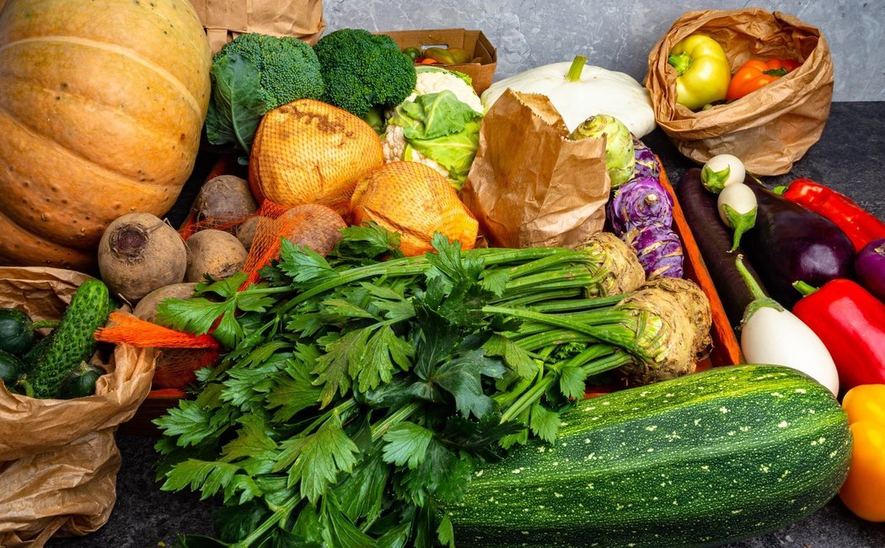
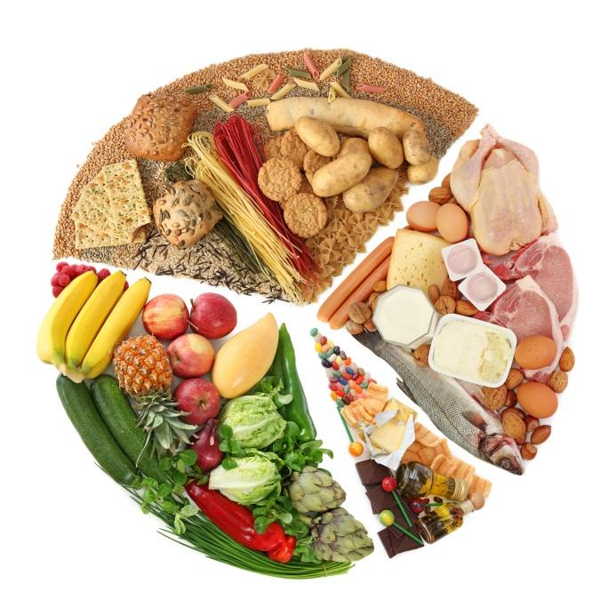

La composición exacta de una alimentación equilibrada está
determinada por las características de cada persona, por
ejemplo, la edad, el sexo y el estilo de vida. Aunque las
necesidades de alguien que trabaja en una oficina son distintas
de las de quien realiza una labor más física, los principios de
la alimentación saludable siguen siendo los mismos.
Hoy en día son muchos los que no llegan a unos mínimos en la
ingesta de frutas, verduras, legumbres, cereales y frutos secos.
Además, se consume una mayor cantidad de alimentos hipercalóricos,
azúcares, sal y grasas.
Si tu alimentación dista mucho de ser considerada saludable y te
cuesta cambiar de hábitos, lo mejor es que empieces con pequeñas
acciones. Incluir paulatinamente verduras en cada comida y elegir
frutas frescas de temporada son algunas de ellas.
¿Cómo conseguir una dieta equilibrada?

En dieta nuestra deben estar presentes todos los alimentos de los grupos
de la pirámide alimentaria y disminuir, todo lo posible, los alimentos
que te aportan más calorías que energía, como dulces, bollería, golosinas,
comida rápida y refrescos.
No te obsesiones con las calorías y sigue estos consejos, te ayudarán a no
engordar y mantener un peso saludable:
Consume todos los días verduras, hortalizas, cereales, pan y patatas.
Toma fruta fresca todos los días (una de ellas un cítrico, naranja,
pomelo, mandarina, limón).
Toma legumbres al menos 2 veces a la semana.
Toma aceite de oliva como principal grasa de la dieta, tanto para
cocinar como para aliñar.
Toma diariamente leche o yogures o quesos bajos en grasa.
Come pescado varias veces a la semana.
Las grasas son necesarias para una dieta correcta, pero no abuses de
las carnes animales muy grasas. Escoge la carne magra (sin mucha grasa)
y tomarla 2 ó 3 veces a la semana. Tomar carnes grasas (rojas, embutidos,
tocino) ocasionalmente, solo alguna vez al mes.
No abuses de la sal ni de los alimentos salados. Usa el ajo, la cebolla,
el vinagre, el limón o las hierbas aromáticas para condimentar como
alternativa a la sal.
Bebe al día unos dos litros de agua. ¡El agua no engorda!
Modera el consumo de dulces, pastelería, bollería (sobre la industrial)
y de comida rápida
Evita las bebidas alcohólicas. Un gramo de alcohol proporciona 7
kilocalorías (1 grado alcohólico equivale a 0.8 gramos de alcohol).